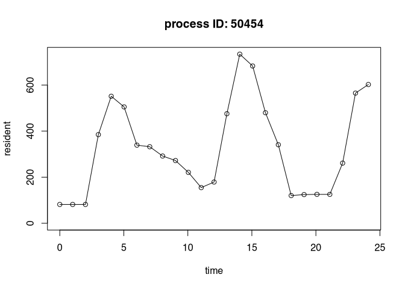
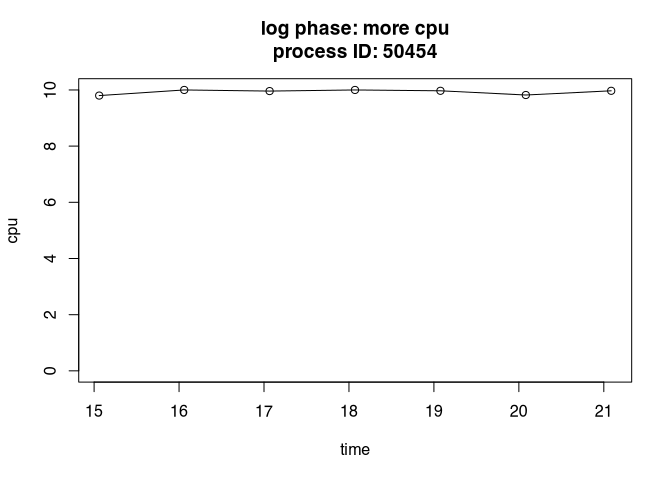

Intense parallel workloads can be difficult to monitor. Packages crew.cluster, clustermq, and future.batchtools distribute hundreds of worker processes over multiple computers. If a worker process exhausts its available memory, it may terminate silently, leaving the underlying problem difficult to detect or troubleshoot. Using the autometric package, a worker can proactively monitor itself in a detached POSIX thread. The worker process itself runs normally, and the thread writes to a log every few seconds. If the worker terminates unexpectedly, autometric can read and visualize the log file to reveal potential resource-related reasons for the crash.
Requirements
- A Linux, Mac OS, or Windows operating system.
- POSIX threads. Modern tool chains seem to provide R with POSIX thread support, even on Windows.
- Either POSIX timers or a Windows operating system.
Installation
You can install the development version of autometric from GitHub with:
remotes::install_github("wlandau/autometric")Usage
The log_start() function in autometric starts a non-blocking POSIX thread to write resource usage statistics to a log at periodic intervals. The following example uses the callr R package to launch a resource-intensive background process on a Unix-like system. The autometric thread prints to standard output, and callr directs all its standard output to a temporary text file we define in advance.1 Custom calls to log_phase_set() annotate the log data2.
log_file <- tempfile()
process <- callr::r_bg(
func = function() {
library(autometric)
log_phase_set("setup")
log_start(
path = "/dev/stdout",
pids = c(my_worker = Sys.getpid()),
seconds = 1
)
log_phase_set("warmup")
Sys.sleep(3)
print("You can mix printed messages with regular log data.")
print("Defining a function that guzzles CPU power.")
is_prime <- function(n) {
if (n <= 1) return(FALSE)
for (i in seq(2, sqrt(n))) {
if (n %% i == 0) {
return(FALSE)
}
}
TRUE
}
log_phase_set("large object")
x <- rnorm(1e8)
log_phase_set("heavy cpu")
lapply(seq_len(1e6), is_prime)
log_phase_set("another object")
y <- rnorm(1e8)
log_phase_set("more cpu")
lapply(seq_len(1e6), is_prime)
log_phase_set("third object")
z <- rnorm(1e8)
log_phase_set("done")
},
stdout = log_file
)When we read in the log file, we see messages from both R and the autometric thread.
writeLines(readLines(log_file))
#> __AUTOMETRIC__|0.1.0|50454|my_worker|0|1730312985.355|0.800|0.080|81707008|420736614400|warmup|__AUTOMETRIC__
#> __AUTOMETRIC__|0.1.0|50454|my_worker|0|1730312986.360|0.000|0.000|81707008|420736614400|warmup|__AUTOMETRIC__
#> [1] "You can mix printed messages with regular log data."
#> [1] "Defining a function that guzzles CPU power."
#> __AUTOMETRIC__|0.1.0|50454|my_worker|0|1730312987.361|0.000|0.000|81788928|420745003008|large object|__AUTOMETRIC__
#> __AUTOMETRIC__|0.1.0|50454|my_worker|0|1730312988.367|98.200|9.820|384761856|421545033728|large object|__AUTOMETRIC__
#> __AUTOMETRIC__|0.1.0|50454|my_worker|0|1730312989.372|99.300|9.930|551337984|421545033728|large object|__AUTOMETRIC__
#> __AUTOMETRIC__|0.1.0|50454|my_worker|0|1730312990.377|99.100|9.910|505069568|421553422336|heavy cpu|__AUTOMETRIC__
#> __AUTOMETRIC__|0.1.0|50454|my_worker|0|1730312991.378|100.000|10.000|339132416|421561810944|heavy cpu|__AUTOMETRIC__
#> __AUTOMETRIC__|0.1.0|50454|my_worker|0|1730312992.380|99.300|9.930|332136448|421561810944|heavy cpu|__AUTOMETRIC__
#> __AUTOMETRIC__|0.1.0|50454|my_worker|0|1730312993.385|100.000|10.000|291848192|421561810944|heavy cpu|__AUTOMETRIC__
#> __AUTOMETRIC__|0.1.0|50454|my_worker|0|1730312994.390|100.000|10.000|272302080|421561810944|heavy cpu|__AUTOMETRIC__
#> __AUTOMETRIC__|0.1.0|50454|my_worker|0|1730312995.395|100.000|10.000|221003776|421561810944|heavy cpu|__AUTOMETRIC__
#> __AUTOMETRIC__|0.1.0|50454|my_worker|0|1730312996.400|100.000|10.000|154877952|421561810944|heavy cpu|__AUTOMETRIC__
#> __AUTOMETRIC__|0.1.0|50454|my_worker|0|1730312997.403|99.200|9.920|178995200|422361825280|another object|__AUTOMETRIC__
#> __AUTOMETRIC__|0.1.0|50454|my_worker|0|1730312998.405|100.000|10.000|475480064|422361825280|another object|__AUTOMETRIC__
#> __AUTOMETRIC__|0.1.0|50454|my_worker|0|1730312999.410|99.500|9.950|733970432|422361825280|another object|__AUTOMETRIC__
#> __AUTOMETRIC__|0.1.0|50454|my_worker|0|1730313000.415|98.000|9.800|682590208|422361825280|more cpu|__AUTOMETRIC__
#> __AUTOMETRIC__|0.1.0|50454|my_worker|0|1730313001.416|100.000|10.000|479789056|422361825280|more cpu|__AUTOMETRIC__
#> __AUTOMETRIC__|0.1.0|50454|my_worker|0|1730313002.421|99.600|9.960|340885504|422361825280|more cpu|__AUTOMETRIC__
#> __AUTOMETRIC__|0.1.0|50454|my_worker|0|1730313003.426|100.000|10.000|120291328|422361825280|more cpu|__AUTOMETRIC__
#> __AUTOMETRIC__|0.1.0|50454|my_worker|0|1730313004.432|99.700|9.970|124502016|422361825280|more cpu|__AUTOMETRIC__
#> __AUTOMETRIC__|0.1.0|50454|my_worker|0|1730313005.437|98.200|9.820|125583360|422361825280|more cpu|__AUTOMETRIC__
#> __AUTOMETRIC__|0.1.0|50454|my_worker|0|1730313006.442|99.700|9.970|125386752|422361825280|more cpu|__AUTOMETRIC__
#> __AUTOMETRIC__|0.1.0|50454|my_worker|0|1730313007.444|98.200|9.820|261177344|423161839616|third object|__AUTOMETRIC__
#> __AUTOMETRIC__|0.1.0|50454|my_worker|0|1730313008.447|99.500|9.950|564985856|423161839616|third object|__AUTOMETRIC__
#> __AUTOMETRIC__|0.1.0|50454|my_worker|0|1730313009.452|100.000|10.000|602243072|423161839616|third object|__AUTOMETRIC__autometric knows how to read its log entries even if the log file has other messages. See the documentation of log_read() to learn how to interpret the data and customize the measurement units.
library(autometric)
log_data <- log_read(log_file)
log_data
#> version phase pid name status time core cpu resident
#> 1 0.1.0 warmup 50454 my_worker 0 0.000 0.8 0.08 81.70701
#> 2 0.1.0 warmup 50454 my_worker 0 1.005 0.0 0.00 81.70701
#> 3 0.1.0 large object 50454 my_worker 0 2.006 0.0 0.00 81.78893
#> 4 0.1.0 large object 50454 my_worker 0 3.012 98.2 9.82 384.76186
#> 5 0.1.0 large object 50454 my_worker 0 4.017 99.3 9.93 551.33798
#> 6 0.1.0 heavy cpu 50454 my_worker 0 5.022 99.1 9.91 505.06957
#> 7 0.1.0 heavy cpu 50454 my_worker 0 6.023 100.0 10.00 339.13242
#> 8 0.1.0 heavy cpu 50454 my_worker 0 7.025 99.3 9.93 332.13645
#> 9 0.1.0 heavy cpu 50454 my_worker 0 8.030 100.0 10.00 291.84819
#> 10 0.1.0 heavy cpu 50454 my_worker 0 9.035 100.0 10.00 272.30208
#> 11 0.1.0 heavy cpu 50454 my_worker 0 10.040 100.0 10.00 221.00378
#> 12 0.1.0 heavy cpu 50454 my_worker 0 11.045 100.0 10.00 154.87795
#> 13 0.1.0 another object 50454 my_worker 0 12.048 99.2 9.92 178.99520
#> 14 0.1.0 another object 50454 my_worker 0 13.050 100.0 10.00 475.48006
#> 15 0.1.0 another object 50454 my_worker 0 14.055 99.5 9.95 733.97043
#> 16 0.1.0 more cpu 50454 my_worker 0 15.060 98.0 9.80 682.59021
#> 17 0.1.0 more cpu 50454 my_worker 0 16.061 100.0 10.00 479.78906
#> 18 0.1.0 more cpu 50454 my_worker 0 17.066 99.6 9.96 340.88550
#> 19 0.1.0 more cpu 50454 my_worker 0 18.071 100.0 10.00 120.29133
#> 20 0.1.0 more cpu 50454 my_worker 0 19.077 99.7 9.97 124.50202
#> 21 0.1.0 more cpu 50454 my_worker 0 20.082 98.2 9.82 125.58336
#> 22 0.1.0 more cpu 50454 my_worker 0 21.087 99.7 9.97 125.38675
#> 23 0.1.0 third object 50454 my_worker 0 22.089 98.2 9.82 261.17734
#> 24 0.1.0 third object 50454 my_worker 0 23.092 99.5 9.95 564.98586
#> 25 0.1.0 third object 50454 my_worker 0 24.097 100.0 10.00 602.24307
#> virtual
#> 1 420736.6
#> 2 420736.6
#> 3 420745.0
#> 4 421545.0
#> 5 421545.0
#> 6 421553.4
#> 7 421561.8
#> 8 421561.8
#> 9 421561.8
#> 10 421561.8
#> 11 421561.8
#> 12 421561.8
#> 13 422361.8
#> 14 422361.8
#> 15 422361.8
#> 16 422361.8
#> 17 422361.8
#> 18 422361.8
#> 19 422361.8
#> 20 422361.8
#> 21 422361.8
#> 22 422361.8
#> 23 423161.8
#> 24 423161.8
#> 25 423161.8autometric also supports simple visualizations plot performance metrics over time. To avoid depending on many other R packages, autometric only uses base plotting functionality. Feel free to create fancier visualizations directly with ggplot2.
log_plot(log_data, metric = "resident")
log_plot(log_data, phase = "more cpu", metric = "cpu")
Attribution
autometric heavily leverages fantastic work on the ps R package by Jay Loden, Dave Daeschler, Giampaolo Rodola, Gábor Csárdi, and Posit Software, PBC. The source code of ps was especially helpful for identifying appropriate system calls to retrieve resource usage statistics. Attribution is given in the Authors@R field of the DESCRIPTION file, the LICENSE.note file at the top level of the package, and in the comments of the C files in src/. Please visit https://github.com/r-lib/ps/blob/main/LICENSE.md to view the license of ps. ps in turn is based on psutil, whose license is available at https://github.com/giampaolo/psutil/blob/master/LICENSE.
Logging to standard output is useful on clusters like SLURM where workers already redirect standard output to log files, or on the cloud where a service like Amazon CloudWatch captures messages instead of directing them to a physical file.↩︎
See also
log_phase_get()andlog_phase_reset()↩︎